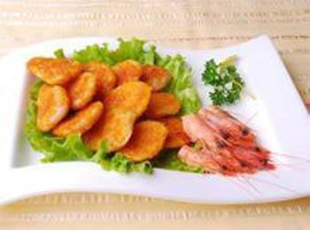

北京时间
煎烹金钱虾饼的做法
口味：咸鲜味 工艺：煎烹
煎烹金钱虾饼的制作材料：
主料：虾仁300克
辅料：荸荠50克,玉兰片20克,黄瓜50克,香菇(干)10克,胡萝卜20克,鸡蛋20克
调料：小葱5克,料酒20克,姜汁25克,盐5克,味精2克,花椒5克,淀粉(蚕豆)10克,植物油30克
煎烹金钱虾饼的特色：外鲜脆，内柔软，浓汁亮芡，咸鲜适口，齿颊留香，余味无穷。
教您煎烹金钱虾饼怎么做，如何做煎烹金钱虾饼才好吃
1. 将青虾仁洗净，剁成肉茸，放小盆内;
2. 虾茸内加入料酒、姜汁、盐搅上劲;
3. 搅上劲的虾茸内再下入半个鸡蛋和湿淀粉一起搅匀;
4. 荸荠削皮，洗净，用刀拍碎，剁成小绿豆粒;
5. 荸荠粒放入小盆内与虾茸搅拌好，放入冷藏箱略冻;
6. 玉兰浸发，洗净，切成大片，用模具压成金钱形，做4个;
7. 鲜嫩黄瓜洗净，取黄瓜皮，切成大片，用模具压成金钱形，做4个;
8. 香菇浸发，去蒂，洗净，切成大片，用模具压成金钱形，做4个;
9. 胡萝卜洗净，切成大片，用模具压成金钱形，做4个;
10. 坐勺烧热油，先下胡萝卜，后下其它，将金钱辅料用热油“激”一下，捞出控净油;
11. 勺内加油，烧至五六成热，将虾茸挤成16 个丸子下入勺中，用手勺轻轻将丸子按扁，使虾丸子成为扁鼓状，两面煎好，用漏勺控出余油;
12. 勺内留底油烧热，用葱花炝勺，烹入调料，添高汤150毫升，将虾饼下勺，用大火烧入味;
13. 同时另置一锅于灶火上入油烧热投入花椒，炸出香味，捞出不要，花椒油留用;
14. 待汤汁将尽时，淋入花椒油，勺离灶火，将虾饼用筷子夹起，整齐摆放盘中;
15. 炒勺回灶，倒入金钱辅料，略加烧，将金钱一个个光面向上，分别分开摆在虾饼上面，浇上余汁即成。
煎烹金钱虾饼的制作要诀：
1. 也可在虾饼煎好后，倒出部分多余的油，将虾饼用手勺拔在一边，下入葱花炝勺，烹调料，更符烹煎二字;
2. 也可在虾饼烧至汁浓时，淋入花椒油，大翻个出勺，金钱辅料均匀撒在上面即可;
3. 因有过油煎制过程，需准备花生油150克。
